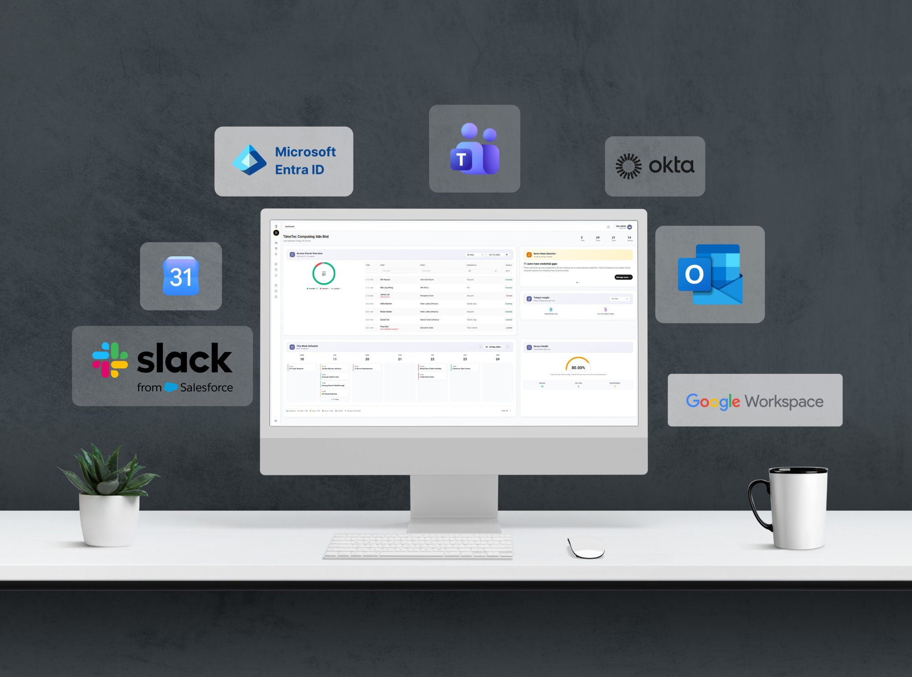
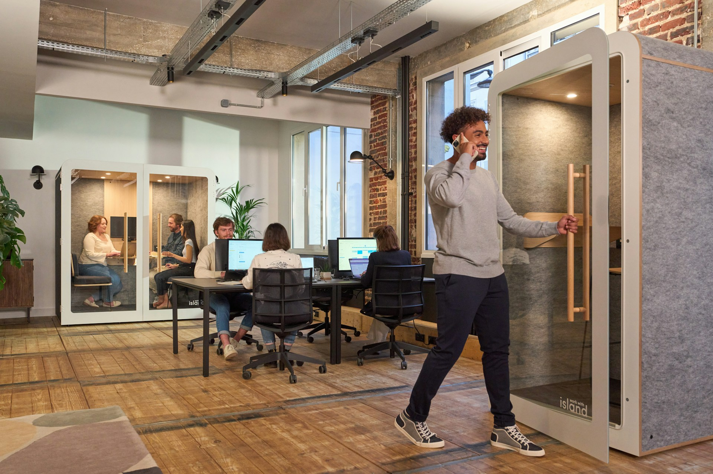

Overview
Protect your workplace. Keep every team moving.

Give the right people the right access.
Connect Sentritec with Okta, Microsoft Entra ID, or Google Workspace to automatically sync users and groups from your IT directory. Set access by role, department, location, door, or schedule. The moment someone joins, changes roles, or leaves, their permissions update everywhere across every site.

Connect access with time and attendance.
Every tap, wave, mobile unlock, or Face Unlock creates a time-stamped access event. Sync that activity with your time and attendance system to support working hours and overtime, then pass approved data directly into your payroll workflow.
Welcome visitors without front-desk friction.
Generate a secure, time-bound temporary key before guests arrive, or connect Sentritec with your visitor management system. Visitors simply scan the QR code and enter during their approved window—no app, physical key, or permanent badge required.

Double up on protection for critical areas.
Deploy two-factor authentication for access to server rooms, finance departments, HR offices, and executive areas by combining a credential with Face Unlock. Powered by Face Core, 3D infrared depth sensing verifies physical depth and facial contours to help distinguish an authorized user from a spoof attempt.

Keep a complete audit trail.
See access events live across every floor and location. Track activity by user, door, and time, then export tamper-proof, time-stamped reports for audits and compliance reviews.